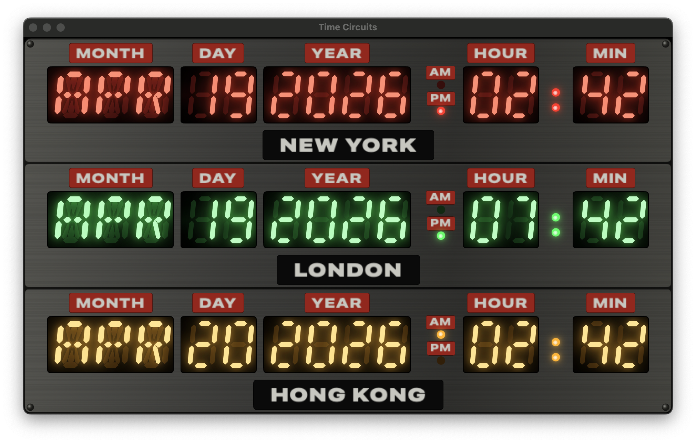

How this BTTF-styled clock came together — iterated to screen accuracy on iPhone, ported to native macOS, then stripped to a chromeless aspect-matched Mac window with its settings in the menu — through Claude Code conversation

Claude opened with clarifying questions rather than jumping in: three fixed colour rows or floating labels? Max city count? Seconds or not? How authentic on the enclosure? Five quick answers later — city labels in silk-screen style, cap at three cities, no seconds, full-on dashboard, curated list with reorder — and the design brief was set.
Claude studied a sibling project (Spectrum) to mirror
its conventions: hand-written project.pbxproj with 24-char
hex IDs, PBXFileSystemSynchronizedRootGroup for the test
target, manual file registration for app sources.
The first build had three coloured rows inside a single big metal
enclosure, with white silk-screen city labels above each row. LED
segments were drawn from scratch as SwiftUI Shapes —
7-segment for digits, 14-segment for month letters, with a beveled
chamfer on each bar, an italic x-shear, and a three-layer glow stack.
The screen-used prop photo revealed several mismatches:
A handful of iteration cycles followed — refactoring
TimeCircuitRowView into per-field black windows, adding a
RowPanel component with its own brushed-metal background,
moving the city label below the display on a black plate.
Claude audited the 14-segment mask table and caught two wrong
entries: A had spurious H + I bits (extra diagonals
appearing where there shouldn't be any), and S had an
unused H bit with G1 missing. Both were bitmask typos from the
initial write-up. V was also using the wrong pair of
segments for the wedge shape; swapped to the standard DSEG14
convention.
"A": 0b0000_0000_1111_0111 // A B C E F G1 G2 (was 0x0377) "S": 0b0000_0000_1110_1101 // A C D F G1 G2 (was 0x018D) "V": 0b0010_1000_0010_0010 // B F K M (was E F J M)
Out went the AM/PM black window; in came three separate
RowPanels on a darker DashboardEnclosureView
chassis. The user asked for a time-ordered default
(New York → London → Hong Kong) so hours roll top-to-bottom, and for
the AM/PM text to move above each lamp rather than
beside it — freeing horizontal space for wider digit spacing.
The label fonts were toned down twice: first expanded for an
old-DYMO-tape feel (.width(.expanded)), then greyed
(#C7C7BF) to match the slightly worn off-white of the
prop's silk-screen.
: between HH and MM, in the matching
colour. It probably flashes per second too.
First pass: a withAnimation(.easeInOut(duration: 0.5)
.repeatForever(autoreverses: true)) animating a
@State level — giving a 1-second cycle. Then:
Yes — but the animation starts on onAppear, so its
phase drifts from wall-clock seconds depending on when the app was
launched. The user asked to drive it from the real clock.
Solution: a TimelineView(.animation) that redraws ~60
times per second, passing context.date into a pure
function:
static func level(at date: Date, dim: Double, half: Double) -> Double {
let t = date.timeIntervalSince1970
let phase = t - floor(t) // 0..<1
let wave = 0.5 + 0.5 * cos(2 * .pi * phase) // 1 at boundary
return dim + (half - dim) * wave // 0.25 ↔ 0.55
}
The pulse now peaks exactly at every whole wall-clock second —
:00, :01, :02 — and troughs at
each half-second. Four new unit tests (ColonPulseTests)
cover peak-at-boundary, trough-at-half, mid-rise, and range bounds.
Three flags, parsed once in ContentView.onAppear,
override persisted state so every visual variation is reachable from
the CLI — no AppleScript required:
xcrun simctl launch "iPhone 16" com.pwilliams.bttfclock \
-frozendate "1985-10-26T01:21:00-07:00" \
-cities london,new_york,hong_kong
With a frozen date the ClockViewModel's
Timer never starts, so every screenshot is byte-stable.
The colon keeps pulsing regardless because its
TimelineView uses the live system Date, not
the view model's frozen instant. 35 Swift Testing cases cover
segment bitmasks, timezone math, persistence round-trips, colon-pulse
maths, and the launch-arg plumbing.
A ~100-line Python/Pillow script renders three 1024×1024 variants
— standard, dark, tinted — drawing the brushed metal background,
three colour-gelled windows, and four corner rivets. The
Contents.json uses luminosity appearance
variants to hook into iOS 18's tinted home-screen mode.
Two options on the table: Mac Catalyst (flip one flag, run the iOS
binary in a Mac window) or a native macOS target (wrap iOS-only
modifiers in #if os(macOS)). We went with Catalyst first
as a stepping stone — literally three settings in the pbxproj:
SUPPORTS_MACCATALYST = YES SUPPORTS_MAC_DESIGNED_FOR_IPHONE_IPAD = NO TARGETED_DEVICE_FAMILY = "1,2" SUPPORTED_PLATFORMS = "iphoneos iphonesimulator macosx"
First run on Mac: it built and launched, but the content was sized
for a portrait iPhone — tiny and centred in a wide Mac window. The
fix was to make each row scale as a unit preserving its aspect ratio.
A single scaleEffect on the whole enclosure broke the
pane feel; what worked was per-row scaling using
.aspectRatio(nat.w / nat.h, contentMode: .fit) around a
GeometryReader + .fixedSize() + .scaleEffect:
GeometryReader { geo in
let scale = min(geo.size.width / nat.width, geo.size.height / nat.height)
VStack(spacing: 3) {
displayRow.frame(width: nat.width, height: rowHeight)
cityPlate
}
.fixedSize()
.scaleEffect(scale, anchor: .center)
.frame(width: geo.size.width, height: geo.size.height)
}
.aspectRatio(nat.width / nat.height, contentMode: .fit)
The jump from Catalyst to truly native was surprisingly small — one
pbxproj flip (SUPPORTS_MACCATALYST = NO,
MACOSX_DEPLOYMENT_TARGET = 14.0,
LSApplicationCategoryType = public.app-category.utilities)
and three tiny view-modifier shims in SettingsView.swift
to hide the iOS-only EditMode,
.navigationBarTitleDisplayMode, and the
.navigationBarDrawer search placement:
private extension View {
@ViewBuilder
func inlineNavigationTitle() -> some View {
#if os(iOS)
self.navigationBarTitleDisplayMode(.inline)
#else
self
#endif
}
// ... similar for platformSearchable(text:) and forceEditModeActive()
}
The result: one multiplatform target, one binary, zero
#if in any other source file. BttfclockApp
got a .defaultSize(760×680) on macOS so the window
opens at a size that fits all three rows. First screenshot showed
the top row cut off and city labels way too big — turned out the
enclosure was growing to ~900pt and scaling the labels 2.5×.
Dropping maxWidth to 700 and shrinking the city plate
(font 14→11, height 24→18) fixed both issues at once.
The smooth cosine pulse was replaced by a step function — no fade, just an instant toggle at each half-second boundary:
static func isLit(at date: Date) -> Bool {
let t = date.timeIntervalSince1970
let phase = t - floor(t)
return phase < 0.5
}
The dot itself was rewritten to share its visual treatment with
the AM/PM lamps — a 5pt circle, color.lit fill, the
same two bloom shadows, and a white-cored radial-gradient hot-spot
that reads as the filament of a real LED through frosted plastic.
The ghost circle stays underneath when unlit, so the tick reads as
subtle rather than a hard flash. Four existing unit tests were
replaced with step-function equivalents: lit on second boundary,
lit through first half, unlit through second half, and toggles at
±0.5.
With the feature work settled, a cleanup pass removed dead code
(unused SevenSegmentNumber, FourteenSegmentWord,
the litCoreOverride parameter left over from the
white-month-letters experiment, RowColor.captionColor),
extracted the duplicated plate colours into a shared
Palette enum, gathered the layout constants in
TimeCircuitRowView under // MARK: sections,
and added /// doc comments on every type and non-obvious
function — explaining why each piece exists (design
decisions, prop-accuracy rationale, invariants) rather than
restating what the code does.
The original Mac window opened at 760×680 with a centred enclosure,
a 14pt horizontal inset, a 700pt maxWidth cap, and a
"CITIES" gear button below — borrowed directly from the iOS layout.
On iPhone all of that makes sense; on a Mac it just wastes pixels.
Three changes got the Mac version to a tight, aspect-matched
window:
DashboardEnclosureView and RowPanel
both got #if os(macOS) blocks that swap in smaller
padding values (2h/3v chassis, 4h/3v panel content, 3pt row
spacing) and drop the .fixedSize(vertical:) so the
enclosure fills the window vertically..defaultSize(width: 520, height: 335) on the
WindowGroup matches that exactly, so the enclosure
fills the window edge-to-edge with no letterboxing.
ContentView was split into a
#if os(macOS) body that drops the
maxWidth: 700 cap and uses
.frame(maxWidth: .infinity, maxHeight: .infinity).CommandGroup(replacing: .appSettings) binds
⌘, to opening the settings sheet. Because the
.commands block lives on the Scene and can't reach
ContentView's private state,
showSettings was hoisted to
BttfclockApp's @State and passed down
as a @Binding — the sheet still presents from
ContentView on both platforms, but now either the
gear button (iOS) or the menu (macOS) can flip the flag.The settings sheet itself needed one more macOS tweak: without
explicit sizing, the modal shrank to the List's minimum
intrinsic size and rendered just a handful of collapsed rows.
Adding
.frame(minWidth: 420, idealWidth: 460, minHeight: 480,
idealHeight: 540) inside a #if os(macOS) block on
the NavigationStack gave it a comfortable default
size.
install-mac.sh drives the whole flow:
./install-mac.sh
It runs xcodebuild -configuration Release
-derivedDataPath ./build, quits any running instance, clears
the SwiftUI-autosaved window frame (so the new
.defaultSize takes effect instead of whatever the user
last dragged the old build to), replaces
/Applications/bttfclock.app, and launches it. The
per-project -derivedDataPath keeps Release artefacts
out of Xcode's global DerivedData.
Three flags, parsed once in ContentView.onAppear,
override persisted state so every visual variation is reachable from
the CLI — no AppleScript required:
xcrun simctl launch "iPhone 16" com.pwilliams.bttfclock \
-frozendate "1985-10-26T01:21:00-07:00" \
-cities london,new_york,hong_kong
With a frozen date the ClockViewModel's
Timer never starts, so every screenshot is byte-stable.
The colon keeps ticking regardless because its
TimelineView uses the live system Date, not
the view model's frozen instant. 35 Swift Testing cases cover
segment bitmasks, timezone math, persistence round-trips, colon-tick
timing, and the launch-arg plumbing.
A ~100-line Python/Pillow script renders three 1024×1024 variants
— standard, dark, tinted — drawing the brushed metal background,
three colour-gelled windows, and four corner rivets. The
Contents.json uses luminosity appearance
variants to hook into iOS 18's tinted home-screen mode.
Every drawing primitive is resolution-independent, so the same view model and segment renderer should port cleanly to watchOS — the three rows may need to stack more tightly on a 45mm face, but the visual identity carries across. That's the next phase.